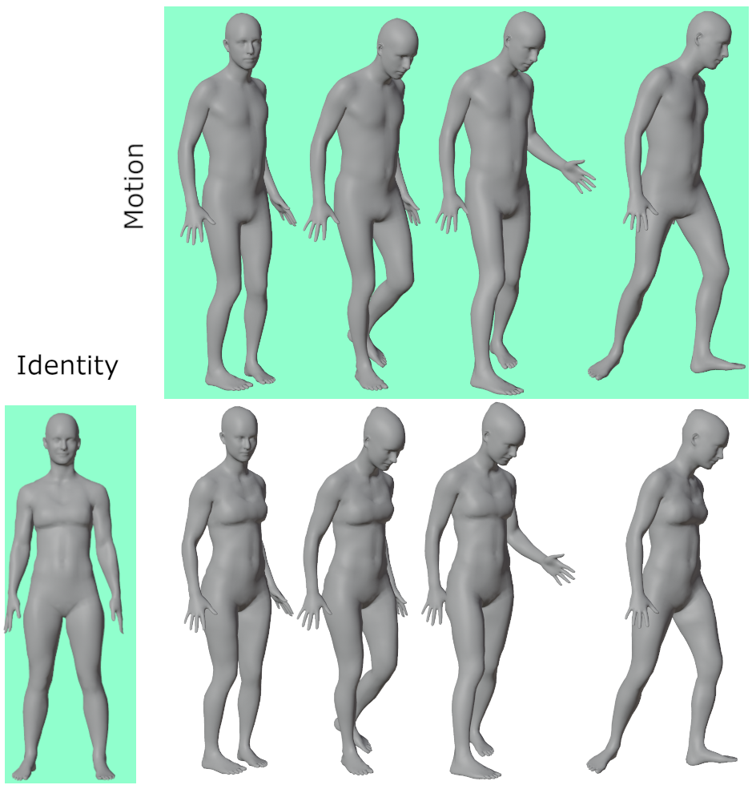
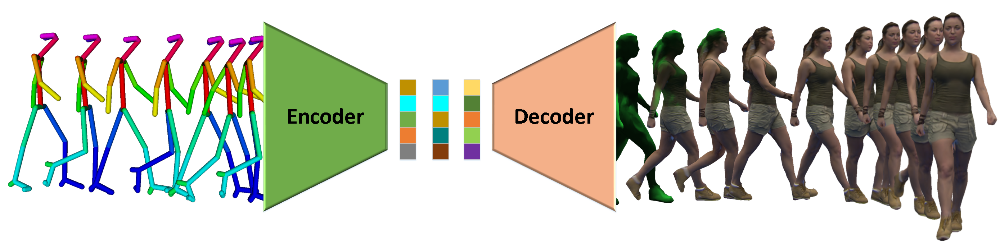
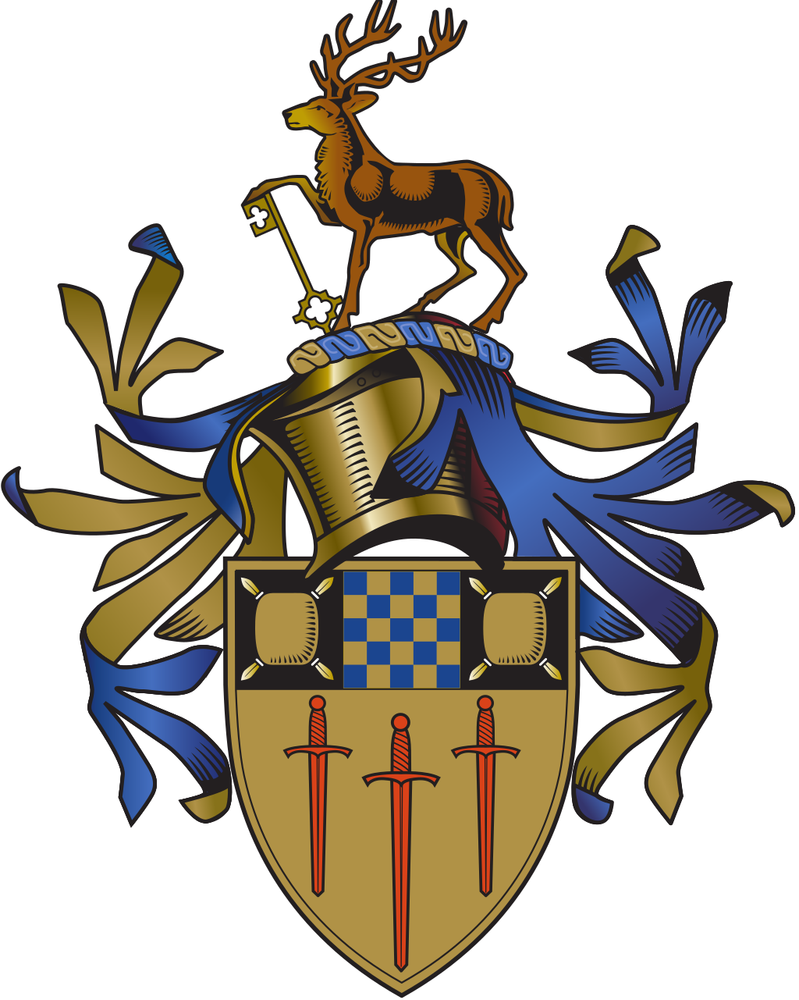
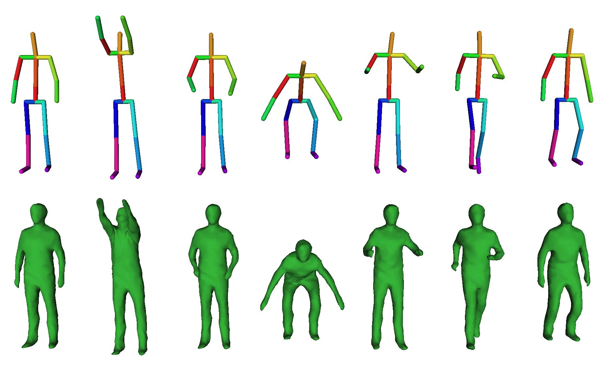
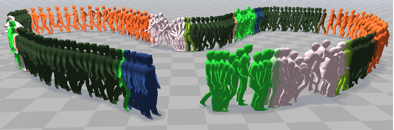
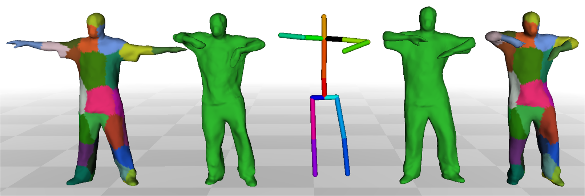

Biography
I am currently a Postdoc researcher at Interdigital , where I will be conducting research on volumetric human representation, animation and standardization with Video Lab .
My research interests are in 3D Computer Vision/Graphics, Multi-view Performance Capture, Human-Computer Interaction, and Video-Based Character Animation to facilitate applications for the creative industry.
I completed my PhD from the Centre for Vision, Speech and Signal Processing at the University of Surrey. The title of my thesis is Learning to Animate Volumetric Video, where I address the problem of video realistic character animation and real-time interaction using learning-based methods for immersive and virtual environments.
I joined Vertual Ltd in 2014 to develop Virtual Reality simulation software in radiation therapy. Previously, I received my M.Sc. degree from the University of Hull (UK).
Research
Publications
2022
|  |
Temporal Shape Transfer Network for 3D Human Motion J. Regateiro and E. Boyer International Conference on 3D Vision (3DV) 2019 |
2021
|  |
Deep4D: A Compact Generative Representation for Volumetric Video J. Regateiro, M. Volino and A. Hilton Frontiers, Creating Lifelike Digital Humans, 2021 |
2020
|  |
Learning to Animate Volumetric Video J. Regateiro PhD Thesis, University of Surrey, 2020 |
2019
|  |
Deep 4D Shape Representation: Learning 4D Volumetric Video from Skeletal Motion J. Regateiro, M. Volino and A. Hilton ACM SIGGRAPH European Conference on Visual Media Production (CVMP) 2019 |
|  |
Dynamic Surface Animation using Generative Networks J. Regateiro, A. Hilton and M. Volino International Conference on 3D Vision (3DV) 2019 |
2018
|  |
Hybrid Skeleton Driven Surface Registration for Temporally Consistent Volumetric Video (Oral) J. Regateiro, M. Volino and A. Hilton International Conference on 3D Vision (3DV) 2018 |
CV
Experience
 |
Post-doc Researcher Interdigital Rennes, Video lab January 2023 - current |
|
Post-doc Researcher Inria Rennes, MimeTic team January 2022 - current |
|
|
Post-doc Researcher Inria Grenoble Rhône-Alpes, Morpheo team April 2020 - Decembre 2021 |
|
|
Software Engineer Vertual Ltd, Hull, United Kingdom Oct 2014 - Sep 2016 |
Education
 |
PhD Computer Vision and Graphics University of Surrey, UK October 2017 - present |
|
Master if Science (MSc), Games Programming The University of Hull, UK September 20013 - September 2014 |
|
|
Bachelor's degree, Computer Science Universidade Nova de Lisboa - Faculdade das Ciências e Tecnologias (FCT) September 2008 - June 2013 |
For a detailed CV please contact me.